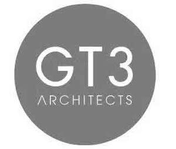

Trade Mark Journal No.2025/031 1 August 2025
UK00004238830 24 July 2025 (37,42)
Mark 1
Mark 2

- Class 37
- Building construction; custom building construction; building inspection in the course of building construction; building construction supervision services for building projects; building construction services; building and construction services; building, construction and demolition; supervision of building construction; building services relating to building for habitation; on site project management relating to the construction of buildings; civil engineering construction; civil construction services; advisory, consultancy and information services in relation to all the aforesaid services; civil engineering construction consultancy; building construction consultancy; consultancy relating to residential and building construction.
- Class 42
- Architecture; architectural services; design services for architecture; architecture design services; architectural design; architectural services for the design of buildings; architectural services for the design of commercial buildings; architectural services for the design of industrial buildings; architectural services for the design of domestic buildings; architectural design for exterior decoration; architectural services for the design of office buildings; architectural services for the design of the built environment; architectural design for town planning; architectural design for interior decoration; interior architectural services; architectural research; architectural services for the preparation of architectural plans; architectural and engineering services; design of layouts for offices; research on building construction or city planning; professional services relating to architectural design; advisory, consultancy and information services in relation to all the aforesaid services.
MAAS HOLDINGS LIMITED
Representative: Swindell & Pearson Limited